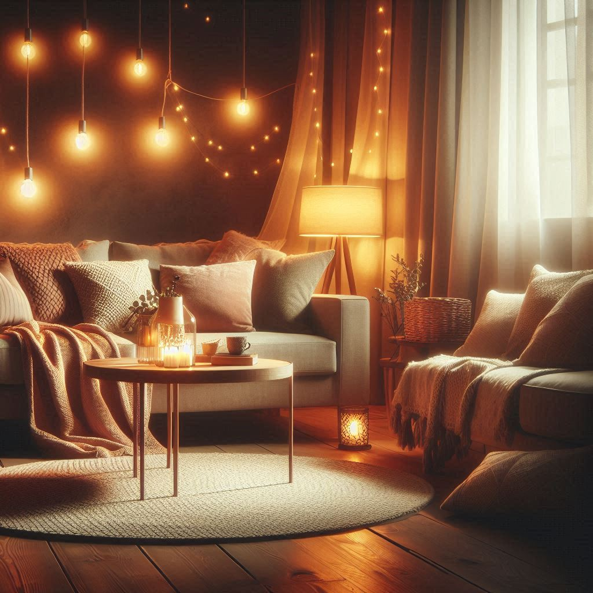
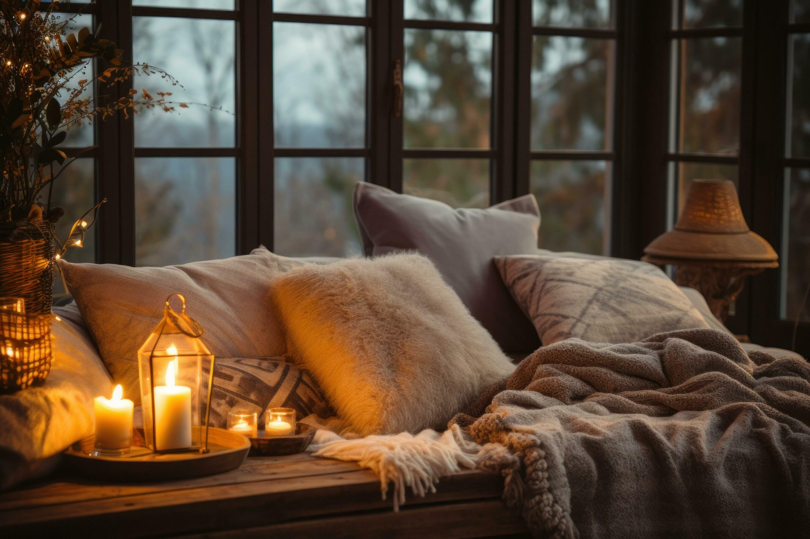
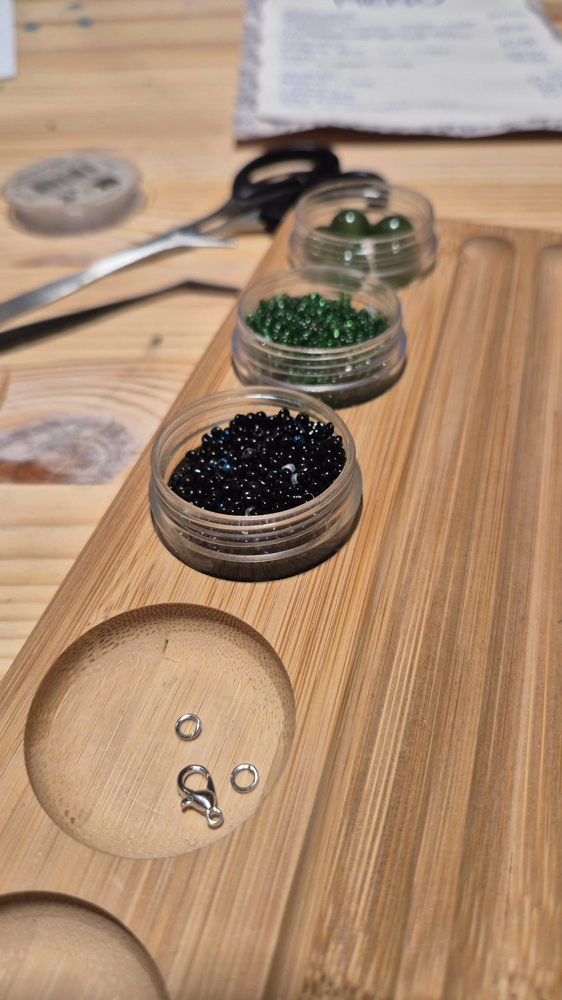

Hygge is a Danish concept that means coziness and simple comfort, often found in small everyday moments. It’s about slowing down and enjoying things like soft lighting, warm drinks, or quiet time.

It’s also about feeling safe and relaxed, whether alone or with others. Hygge isn’t about luxury, but creating a genuinely comforting atmosphere

Creative activities like knitting, reading, candle-making, walking in nature, and cooking are simple ways to relax. Knitting and candle-making let you create with your hands, while reading and nature walks refresh the mind.

Cooking turns ingredients into something comforting. Together, these activities bring calm, inspiration, and small moments of joy.
In the video, you’ll also find a simple recipe perfect for home chefs who love sweet treats. It features a traditional Danish, hygge-inspired favorite — the classic cinnamon roll — a warm, cozy pastry that’s ideal for enjoying with a cup of coffee or sharing with someone you love.